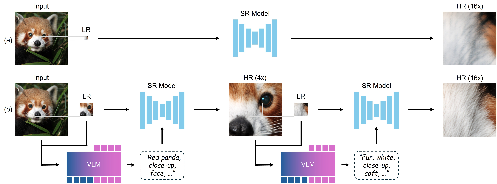
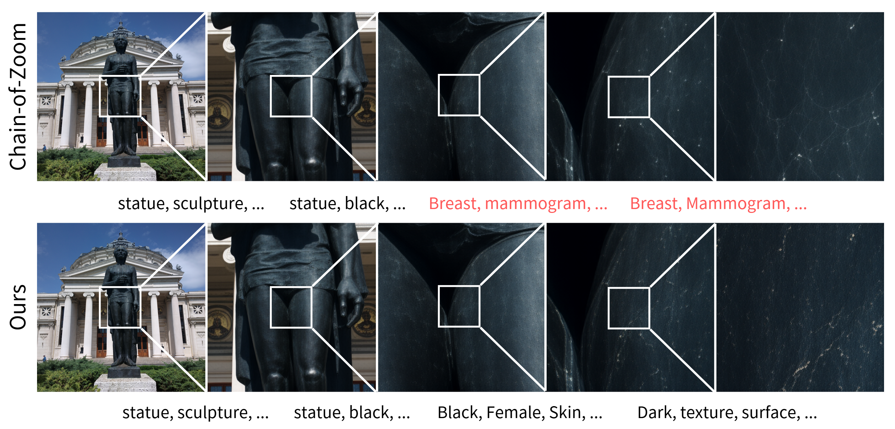
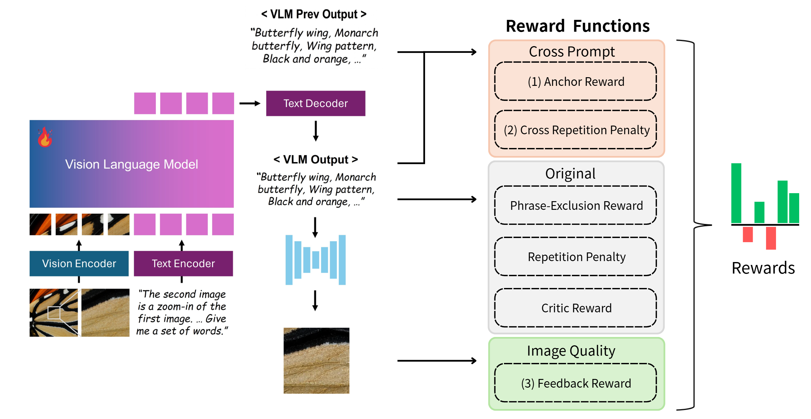

Chain-of-Zoom (CoZ) is an autoregressive framework that achieves extreme super-resolution (up to 256x) by decomposing magnification into intermediate scale-states guided by VLM-generated prompts. While CoZ effectively uses VLMs to compensate for sparse visual evidence, it remains vulnerable to semantic drift, where recursive zooming causes the VLM to lose global context and hallucinate incorrect details. Additionally, the model faces information convergence, where repetitive prompts fail to introduce new high-frequency textures at deep scales.
This project proposes to enhance CoZ by expanding its state space to include historical prompts and scale factors. We also introduce a Semantic Anchor Reward via GRPO to ground deep-scale generations in the original image's global label, ensuring semantic stability and continuous information gain throughout the zoom process.

Chain-of-Zoom. Starting from an LR input, a pretrained VLM generates a descriptive prompt, which—together with the image—is fed to the same SR backbone to yield the next HR scale-state. This prompt-and-upscale cycle is repeated, allowing a single off-the-shelf model to climb to extreme resolutions (16x-256x) while preserving sharp detail and semantic fidelity.

While the original Chain-of-Zoom (CoZ) framework enables off-the-shelf super-resolution models to climb to extreme scales, it suffers from two critical bottlenecks during unoptimized recursive generation:

To mitigate the baseline limitations, we reformulate the multi-objective reward function under GRPO by introducing three core components: